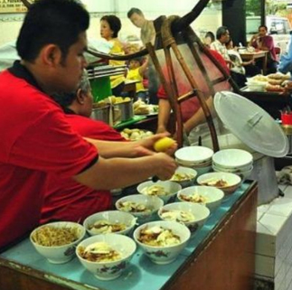
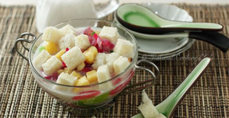
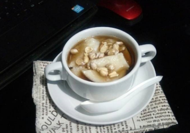

Bakso Malang

Bakso merupakan salah satu ikon kuliner di Malang yang sangat dikenal berbagai kalangan masyarakat di nusantara, khususnya warga Malang. Layaknya primadona, wisata kuliner Malang ini banyak dijajakan di berbagai kota mulai dari pedagang kaki lima, kios, warung, depot, bahkan restoran. Sehingga wisata Kuliner Malang yakni Bakso Malang tidak sulit dicari. Sajian bakso Malang juga sudah mulai dikreasikan hingga memiliki ciri khas sendiri untuk menarik minat pembeli. Bakso Malang sendiri terdiri aneka bakso, pangsit isi, tahu, mi, bihun dan siomay. Anda juga bisa memilih dan mengombinasikan isi mangkuk wisata kuliner Malang ini sesuai dengan selera. Tanpa disadari, hal tersebut membuat pengalaman makan Bakso Malang menjadi menyenangkan. Sementara untuk harga bakso Malang ini relatif terjangkau berkisar Rp 10.000 hingga Rp 25.000. Tak heran jika bakso Malang disukai segala kalangan, baik tua maupun muda. Nah jika ingin membuat wisata kuliner Malang ini di rumah juga bisa.
Orem-Orem

Salah satu kuliner khas Kota Malang yang sudah jarang dijumpai keberadaannya adalah orem-orem. Orem-orem adalah makanan berbahan dasar tempe yang disajikan dengan kuah santan berwarna kuning. Kadang ditambah telur ayam atau telur puyuh rebus. Orem-orem disajikan dengan potongan ketupat atau lontong. Sekilas mirip ketupat sayur, tapi rasa bumbu pada orem-orem lebih nendang. Saat ini warung yang menjual orem-orem di Kota Malang mulai jarang dijumpai. Beberapa di antaranya adalah Orem- orem Arema di Jalan Blitar, Kecamatan Lowokwaru; Warung Orem-orem H. Abdul Manan di Jalan Irian Jaya, Kecamatan Klojen; dan Orem-orem Ketupat Pak H. Moh. Syahri Pertukangan di Jalan Gatot Subroto Jodipan, Kecamatan Blimbing. Di tahun 1980-an, orem-orem biasa disajikan pada acara syukuran atau hajatan. Seiring berjalannya waktu, menu orem-orem sudah jarang disajikan pada acara-acara syukuran, tergantikan oleh menu rawon atau soto. Tapi kadang pada acara syukuran di daerah perdesaan Kota Malang, masih menyajikan menu orem-orem.
Bakso Bakar Malang

Bakso bakar adalah sebuah jenis hidangan bakso yang dibuat dengan cara dibakar dan kemudian ditusuk memakai tusuk sate sebelum akhirnya diberi bumbu. Hidangan tersebut berasal dari kota Malang. Bakso bakar khas Malang, Jawa Timur, berhasil 'menghipnotis' para pecinta kuliner hingga para turis asing yang berwisata ke Malang. Aroma bakar dengan rasa pedasnya menjadi khas tersendiri dan tidak ditemukan pada bakso lain di luar Malang. Bakso bakar khas Malang pertama kali diciptakan oleh Soeparman, yang populer dipanggil Pak Man. Warung Bakso Bakar Pak Man berlokasi di Jalan Diponegoro No 19 A Kota Malang. Bakso bakar Pak Man setiap harinya dibuka pada pukul 09.00 WIB hingga pukul 21.00. Saat Kompas.com berkunjung ke warung tersebut, terlihat tak pernah sepi dengan pengunjung. Keberadaan bakso bakar Pak Man semakin meramaikan wisata kuliner khas Kota Malang. Bakso Pak Man menyediakan beragam varian cita rasa bakso khas Malang. Dari bakso rebus hingga bakar.
Cwie Mie
Cwie mie Malang adalah makanan khas dari Malang, Jawa Timur. Sajian ini berupa mi ayam dengan topping daging ayam giling tanpa kecap manis dan biasanya disajikan dengan selada. Ciri khas cwie mie punya rasa kaldu yang ringan, sehingga cocok disantap untuk setiap waktu. Selain itu cwie mie biasanya punya tekstur mie yang lembut dan bentuk cenderung lurus.
Soto Lombok
Soto Lombok, tak lengkap rasanya berkunjung ke Kota Malang tanpa mencicipi kuliner yang satu ini. Nama hidangan ini diambil bukan karena bahan utamanya terbuat dari lombok (cabai) ataupun berasal dari Pulau Lombok, melainkan karena restorannya terletak di Jalan Lombok Kota Malang. Dalam semangkok soto terdapat nasi putih, kuah yang pekat, irisan ayam kampung yang melimpah, kubis, kentang, tauge, taburan seledri, serta sesendok koyah kelapa yang gurih. Soto ini lebih nikmat jika disantap bersama kerupuk ikan berukuran besar yang juga menjadi ciri khas dari Soto Lombok. Ciri khas Soto Lombok adalah pikulan kayu yang bisa ditemui berada di tengah restoran. Pikulan ini berisi kuah dan pelengkap soto dengan seorang karyawan duduk di belakangnya sibuk meracik semangkok soto.
Nasi Buk

Nasi buk adalah makanan khas dari Madura. Oleh warga asal Madura, nasi campur itu dibawa ke Kota Malang hingga akhirnya berkembang dan terkenal di kota dengan julukan Paris for East Java itu. Dengan lauk andalan jeroan sapi seperti empal, jantung, limpa, babat, keripik paru, dendeng, hingga sate ati, nasi buk ini menjadi sangat istimewa. Saat ini ada beberapa warung legedaris nasi buk di sekitar Malang. Sebut saja Nasi Buk Matinah di Stasiun Kota Baru, Nasi Buk Araya di Perumahan Blimbing, dan jejeran warung nasi buk di depan RS Panti Nirmala.
Tempel Mendol
Mendol merupakan salah satu makanan khas Malang yang punya sejarah unik. Mendol umumya disantap sebagai lauk pendamping untuk hidangan seperti rawon, lodeh, dan pecel. Mendol tempe dibuat dari tempe yang terlebih dahulu dikukus. Tempe yang sudah dikukus kemudian dihancurkan dan dicampur dengan bumbu-bumbu lainnya, lalu mendol tempe dimasak dengan cara digoreng. Bentuknya lonjong, teksturnya garing di luar dan lembut di dalam.
Angsle
Angsle merupakan salah satu wedang atau minuman hangat khas Malang yang sering dijual bersama dengan ronde. Angsle memiliki rasa yang khas dan berbeda dengan ronde karena kuahnya yang terbuat dari santan dengan isian berupa roti, kacang hijau, petulo, dan mutiara.
Tahwa
Malang terkenal memiliki cuaca yang sangat dingin, sehingga banyak sekali muncul jenis minuman hangat yang nikmat seperti STMJ, ronde, angsle serta ditambah lagi sebuah hidangan lain yang biasa disebut dengan nama tahwa. Seperti namanya, hidagan yang satu ini berasal dari Cina dan sudah terkenal di beberapa kota besar di Indonesia, hanya saja di Malang biasa disebut sebagai Tahwa dan di daerah lain dikenal dengan nama kembang tahu. Hidangan yang sudah lama terkenal di Kota Malang ini sangat cocok dengan kondisi kota yang selalu dingin, adanya campuran jahe dan gula merah pada kuahnya membuat makanan yang satu ini mampu menghangatkan badan di malam hari, terutama saat badan sedang dingin-dinginnya. Enaknya isian tahu yang lumer di mulut juga bikin hidangan ini semakin diidolakan.